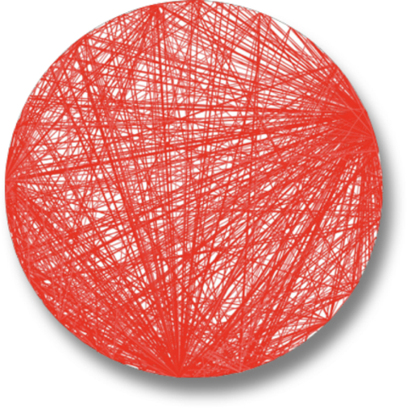
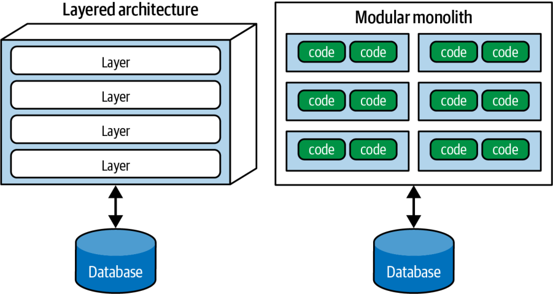
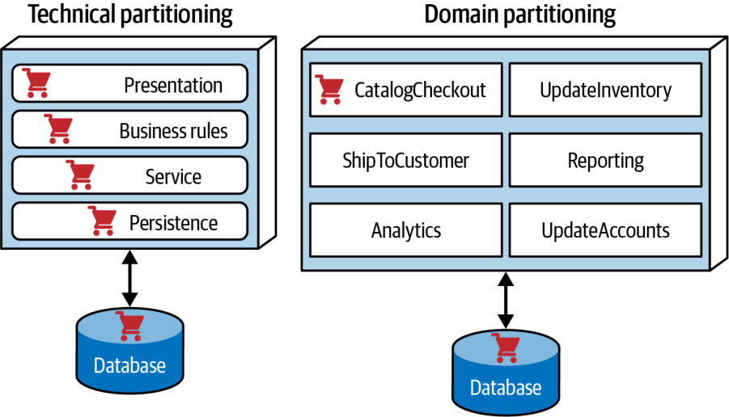
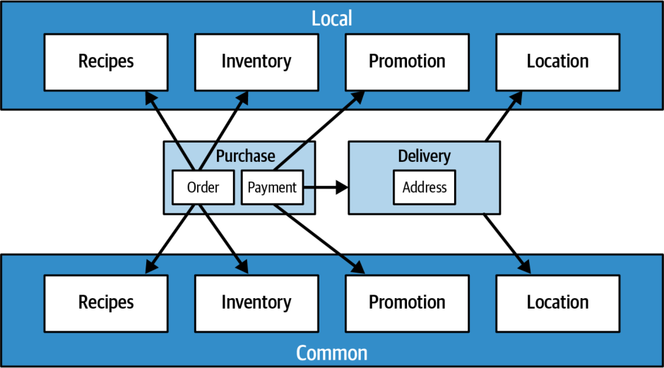
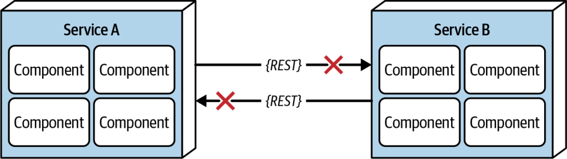
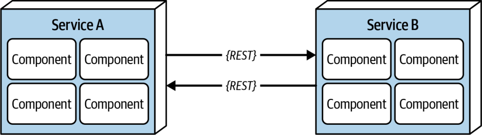
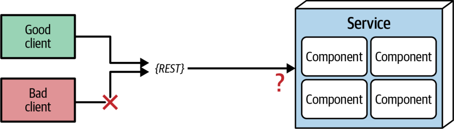
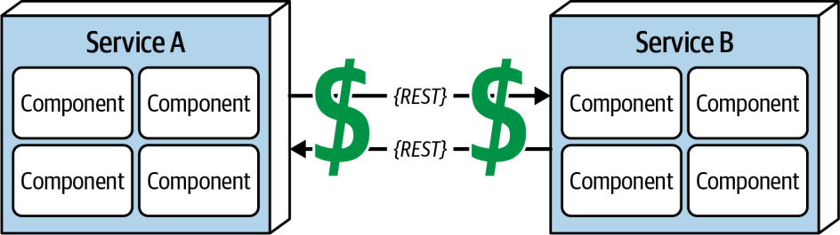

تفاوتِ میانِ سبک معماری و الگوی معماری (architecture pattern) ممکن است گیجکننده باشد؛ این تفاوت را بیدرنگ، در فصل ۹ که پیشِ رو است، تعریف میکنیم.
شناختِ سبکهای معماری بخشِ بزرگی از وقت و توانِ معمارانِ تازهکار را به خود اختصاص میدهد، زیرا سبکها هم مهماند و هم فراوان. معماران برای گرفتنِ تصمیمهای اثربخش باید سبکهای گوناگون و مصالحههای نهفته در هر یک را بشناسند؛ هر سبک معماری مجموعهای شناختهشده از مصالحهها را در خود دارد که به معماران کمک میکند برای یک مسئلهٔ کسبوکاریِ مشخص انتخابِ درستی داشته باشند.
میدانیم مشتاقید هرچه زودتر به جزئیاتِ سبکها و الگوهای معماری برسید؛ اما نخست باید برخی مطالبِ بنیادین و تعریفی را پوشش دهیم تا بافتارِ مناسب برای فصلهای بعدی فراهم شود.
سبکها در برابرِ الگوها
نخست باید میانِ سبکهای معماری و الگوها در معماری تمایز بگذاریم، زیرا بهآسانی با هم اشتباه گرفته میشوند.
سبکِ یک معماری چندین ویژگیِ متفاوتِ آن معماری را توصیف میکند، از جمله:
توپولوژیِ مؤلفهها (component topology): سبک معماری تعیین میکند که مؤلفهها و وابستگیهایشان چگونه سازماندهی شوند. برای نمونه، معماری لایهای لایههای مؤلفهها را بر پایهٔ قابلیتهای فنیشان سازمان میدهد، در حالی که تکپارچهٔ ماژولار (modular monolith) مؤلفههایش را حولِ حوزهها سازمان میدهد (دربارهٔ این تفاوت در بخشِ «افرازِ معماری» در صفحهٔ ۱۳۷ بیشتر میگوییم).
معماری فیزیکی: سبک اغلب نوعِ معماری فیزیکی را تعیین میکند: یا تکپارچه یا توزیعشده. برای نمونه، تکپارچهٔ ماژولار عموماً معماریای تکپارچه با یک پایگاهدادهٔ واحد است، در حالی که معماری رویدادمحور همیشه توزیعشده است.
استقرار: دانهبندیِ سیستم و بسامدِ استقرارِ (deployment frequency) آن اغلب با سبک معماریِ آن پیوند دارد. تیمها معماریهای تکپارچه را عموماً در قالبِ یک استقرارِ واحد همراه با یک پایگاهدادهٔ رابطهایِ واحد مستقر میکنند. در مقابل، معماریهای توزیعشدهٔ بسیار چابک، مانندِ میکروسرویسها، از یکپارچهسازیِ خودکار، تأمینِ خودکارِ منابع (automated provisioning) و گاهی استقرارهای خودکار بهره میبرند؛ این معماریها عموماً تکهتکه و با آهنگی (cadence) بسیار سریعتر مستقر میشوند.
سبک ارتباطی (communication style): سبک معماری همچنین تعیین میکند که مؤلفهها چگونه با یکدیگر ارتباط برقرار کنند. معماریهای تکپارچه میتوانند درونِ همان تکپارچه فراخوانیِ متد انجام دهند، در حالی که معماریهای توزیعشده از راهِ پروتکلهای شبکه (network protocols)، مانندِ REST یا صفهای پیام، ارتباط برقرار میکنند.
توپولوژیِ داده (data topology): توپولوژیِ دادهٔ سیستم نیز، درست مانندِ توپولوژیِ مؤلفهها، اغلب از سبک معماریِ آن پیروی میکند. معماریهای تکپارچه معمولاً پایگاهدادهای تکپارچه دارند، در حالی که معماریهای توزیعشده، بسته به فلسفهٔ سبک معماری، گاهی دادهها را از هم جدا میکنند.
نامگذاریِ یک سبک راهی موجز برای توصیفِ این مجموعهٔ پیچیده از عوامل فراهم میکند. هر نام انبوهی از جزئیاتِ شناختهشده را در خود جای میدهد؛ این یکی از هدفهای الگوهای طراحی است. اما در حالی که یک الگو راهحلی بافتارمند را در خود ثبت میکند، سبک ویژهٔ معماری است و جنبههای برشمرده در بالا را توصیف میکند. سبک معماری توپولوژیِ معماری و ویژگیهای مفروض و پیشفرضِ آن، چه سودمند و چه زیانبار، را توصیف میکند. چند الگوی معماریِ رایج و مدرن را در فصل ۲۰ بررسی میکنیم. معماران باید با چند سبکِ بنیادین که بلوکهای سازندهٔ رایجِ سیستمها هستند آشنا باشند.
سبکهای معماری از کجا میآیند؟
برخلافِ باورِ رایج، هیچ محفلِ رسمیِ معماریای وجود ندارد که در برجی عاج گرد هم آید و تصمیم بگیرد سبکهای معماریِ بعدی چه باشند. بلکه سبکهای جدید از دلِ اکوسیستمهایی که معماران در آنها کار میکنند و پیوسته در حالِ تکاملاند سر بر میآورند.
برای نمونه، فرض کنید معماری زیرک متوجه میشود که قابلیتی تازه که بهتازگی در اکوسیستم پدیدار شده، مسئلهٔ آزارندهٔ خاصی را حل میکند. او تصمیم میگیرد آن را با چند چیزِ دیگر، چه نو و چه کهنه، ترکیب کند. معمارانِ دیگر این راهحلِ زیرکانه را میبینند و از آن تقلید میکنند. این راهحل به اندازهای رایج میشود که نامگذاریاش گفتوگو دربارهٔ آن را آسانتر میکند.
سبکِ معماری میکروسرویسها نمونهٔ عالیای از این پدیده است. پیدایشِ قابلیتهای تازهٔ DevOps، سیستمعاملهای آزادِ قابل اعتماد و فلسفهٔ طراحی حوزهمحور به معماران امکان داد سیستمها را به شیوههای تازهای بسازند تا مسائلی مانندِ مقیاسپذیری را حل کنند. نامِ microservices واکنشی بود به سبکهای معماریِ رایجِ آن زمان که سرویسهای بزرگ و ارکستراسیونِ گسترده داشتند. «میکروسرویسها» یک برچسب است، نه یک توصیف. این نام فرمانی برای تیمها نیست که کوچکترین سرویسهای ممکن را بسازند، بلکه راهی برای اشاره به این سبک معماری است.
الگوهای بنیادین
چندین الگوی بنیادین (fundamental patterns) بارها و بارها در طولِ تاریخِ معماری نرمافزار پدیدار شدهاند؛ عموماً به این دلیل که دیدگاهی سودمند برای سازماندهیِ کد، استقرارها یا دیگر جنبههای معماری فراهم میکنند. برای نمونه، مفهومِ لایههایی که دغدغههای گوناگون را بر پایهٔ کارکرد از هم جدا میکنند، به قدمتِ خودِ نرمافزار است. با این همه، لایهها (هم در سبکها و هم در الگوها) همچنان در هیئتهای گوناگون نمود مییابند؛ از جمله گونههای مدرنی که در فصل ۱۰ بررسی میکنیم.
افسوس که ضدالگوی رایجِ دیگری نیز وجود دارد که از نبودِ معماری سرچشمه میگیرد: توپِ بزرگِ گِل.
توپِ بزرگِ گِل
معماران نبودِ هرگونه ساختارِ معماریِ تشخیصپذیر را توپِ بزرگِ گِل مینامند؛ نامی برگرفته از ضدالگویی که Brian Foote و Joseph Yoder در مقالهای تعریف کردند که در سال ۱۹۹۷ در کنفرانسِ Pattern Languages of Programs ارائه شد.
توپِ بزرگِ گِل جنگلی از کدِ اسپاگتی (spaghetti code) است: بیساختار، پراکنده، شلخته و سرهمبندیشده با چسبنواری و سیممفتول. این سیستمها نشانههای انکارناپذیرِ رشدِ بیقاعده و تعمیرهای مکرر و سرسری را نشان میدهند. اطلاعات بیحسابوکتاب میانِ اجزای دوردستِ سیستم به اشتراک گذاشته میشود؛ اغلب تا جایی که تقریباً همهٔ اطلاعاتِ مهم سراسری یا تکراری میشوند.
ساختارِ کلیِ سیستم شاید هرگز بهخوبی تعریف نشده باشد.
و اگر شده بوده، شاید چنان فرسوده شده باشد که دیگر بازشناختنی نیست. برنامهنویسانی که ذرهای حسِ معماری دارند از این باتلاقها دوری میکنند. تنها کسانی که دغدغهٔ معماری ندارند و شاید به رخوتِ کارِ روزمرهٔ وصلهکردنِ سوراخهای این سدهای فروریزنده خو گرفتهاند، به کار روی چنین سیستمهایی خرسندند.
امروزه توپِ بزرگِ گِل ممکن است برنامهای اسکریپتیِ ساده و بدونِ ساختارِ درونیِ واقعی را توصیف کند که گردانندههای رویدادِ (event handlers) آن مستقیماً به فراخوانیهای پایگاهداده سیمکشی شدهاند. بسیاری از برنامههای پیشپاافتاده اینگونه آغاز میشوند و با رشدشان دستوپاگیر میشوند.
بهطورِ کلی، به هر قیمتی از این نوع معماری بپرهیزید. نبودِ ساختار در آن تغییر را روزبهروز دشوارتر میکند. چنین معماریهایی همچنین با مشکلاتی در استقرار، آزمونپذیری، مقیاسپذیری و کارایی دستبهگریباناند. هرچه این سیستمها بزرگتر شوند، دردِ ناشی از نبودِ معماری در آنها شدیدتر میشود.
متأسفانه این ضدالگو در دنیای واقعی بسیار رخ میدهد. معمارانِ اندکی قصدِ آفریدنِ چنین آشفتگیای را دارند، اما بسیاری از پروژهها ناخواسته به آن میرسند؛ معمولاً به دلیلِ نبودِ حاکمیت بر کیفیت و ساختارِ کد. برای نمونه، Neal روی پروژهٔ یکی از مشتریان کار کرد که ساختارش در شکل ۹-۱ آمده است.
این مشتری (که نامش به دلایلِ روشن فاش نمیشود) طیِ چند سال یک برنامهٔ وبِ مبتنی بر Java را با بیشترین شتابِ ممکن ساخته بود. مصورسازیِ فنیِ شکل ۹-۱ کوپلینگِ آن را نشان میدهد: هر نقطه روی محیطِ دایره نمایانگرِ یک کلاس است و هر خط نمایانگرِ اتصالی میانِ کلاسها؛ خطهای پررنگتر اتصالهای قویتر را نشان میدهند. در این پایگاه کد، هر نوع تغییر در یک کلاس پیشبینیِ اثرش بر کلاسهای دیگر را دشوار میکند و تغییر را به کاری هراسآور بدل میسازد.

شکل ۹-۱. معماری توپِ بزرگِ گِل، مصورشده از یک پایگاه کدِ واقعی. (ساختهشده با ابزاری بازنشسته به نامِ XRay، یک افزونهٔ Eclipse.)
مشکلِ معماریهای توپِ بزرگِ گِل فقط نبودِ ساختار نیست. چون همهچیز به همهچیز کوپل شده است، تغییرات اثراتِ جانبیِ موجوار و پیشبینیناپذیری دارند. این مشکل میتواند به نقطهٔ بحرانیای برسد که توسعهدهندگان همهٔ وقتشان را بهجای کار روی قابلیتهای جدید، صرفِ تعقیبِ باگها و اثراتِ جانبیِ آنها کنند.
معماری یکتا (Unitary Architecture)
در آغاز تنها رایانه بود و نرمافزار روی آن اجرا میشد. این دو در آغاز موجودیتی واحد بودند و سپس، همزمان با تکاملشان و رشدِ نیاز به قابلیتهای پیچیدهتر، از هم جدا شدند. برای نمونه، رایانههای بزرگ (mainframes) نخست سیستمهایی یکپارچه و منفرد بودند و سپس بهتدریج داده را در نوعِ جداگانهای از سیستم جای دادند. به همین ترتیب، وقتی رایانههای شخصی (PCs) نخستین بار بهصورتِ تجاری توسعه یافتند، تمرکز عمدتاً بر ماشینهای منفرد بود. با رایجشدنِ شبکهکردنِ رایانههای شخصی، سیستمهای توزیعشده (مانندِ کلاینت/سرور) پدیدار شدند.
کلاینت/سرور
بیرون از سیستمهای تعبیهشده (embedded systems) و دیگر محیطهای بهشدت محدود، معماریهای یکتای اندکی وجود دارند. سیستمهای نرمافزاری عموماً با گذشتِ زمان کارکردهای بیشتری مییابند و جداسازیِ دغدغهها برای حفظِ ویژگیهای معماریِ عملیاتیِ آنها، مانندِ کارایی و مقیاس، ضروری میشود.
بسیاری از سبکهای معماری به این میپردازند که چگونه بخشهای سیستم را بهشکلی کارآمد از هم جدا کنیم. یکی از سبکهای بنیادین در معماری، کارکردهای فنی را میانِ سمت کاربر و سمتِ سرور (backend) جدا میکند: این سبک معماری دولایه (two-tier) یا کلاینت/سرور (client/server) نام دارد. این سبک بسته به دوره و توانِ محاسباتیِ سیستم، گونههای مختلفی دارد.
رومیزی و سرورِ پایگاهداده
یکی از معماریهای اولیهٔ رایانههای شخصی توسعهدهندگان را به نوشتنِ برنامههای رومیزیِ (desktop) غنی در رابطهای کاربریای مانندِ Windows ترغیب میکرد و دادهها را در یک سرور پایگاهدادهٔ جداگانه قرار میداد. این معماری همزمان با پیدایشِ سرورهای پایگاهدادهٔ مستقلی بود که میتوانستند از راهِ پروتکلهای شبکهٔ استاندارد متصل شوند. این امر اجازه میداد منطقِ ارائه (presentation logic) روی رایانهٔ رومیزی بماند، در حالی که کنشهای محاسباتیِ سنگینتر (هم از نظرِ حجم و هم از نظرِ پیچیدگی) روی سرورهای پایگاهدادهٔ نیرومندتر انجام شوند.
مرورگر و وبسرور
با رسیدنِ توسعهٔ وبِ مدرن، رایج شد که معماریها را به یک مرورگرِ وب متصل به یک وبسرور (که خود به یک سرور پایگاهداده متصل بود) تقسیم کنند. این تفکیکِ مسئولیتها به گونهٔ رومیزی شبیه بود، اما مرورگرها کلاینتهایی حتی نازکتر (thinner clients) بودند و امکانِ توزیعِ گستردهتری را هم درون و هم بیرون از دیوارهای آتش (firewalls) فراهم میکردند. با اینکه پایگاهداده از وبسرور جداست، بسیاری از معماران همچنان این را معماری دولایه میدانند، زیرا وبسرور و سرور پایگاهداده روی یک ردهٔ ماشین در مرکزِ عملیات اجرا میشوند، در حالی که رابط کاربری در مرورگرِ کاربر اجرا میشود.
با بهبودِ پاسخگوییِ وب، پیادهسازیهای JavaScript در مرورگرها نیز بهتر شدند. خانوادهای از برنامهها با سبکِ کلاینت/سرور پدید آمد که به گونهٔ رومیزیِ اولیه شباهت دارد، با این تفاوت که کلاینتِ غنی (rich client) بهجای یک برنامهٔ رومیزی، با JavaScript و در مرورگر نوشته میشود.
چنانکه این بخش نشان میدهد، همیشه لایههایی برای جداسازیِ بخشهای مختلفِ معماری وجود خواهند داشت که به نیازهای برنامه و تواناییهای پلتفرم بستگی دارند.
سهلایه
معماری سهلایه (three-tier architecture)، که لایههای تفکیکِ بیشتری فراهم میکرد، در اواخرِ دههٔ ۱۹۹۰ رواج یافت. با برجستهشدنِ ابزارهایی مانندِ سرورهای برنامهٔ کاربردی در Java و .NET، شرکتها شروع به افزودنِ لایههای بیشتر به توپولوژیهایشان کردند. یک سیستم ممکن بود یک لایهٔ پایگاهداده با سرور پایگاهدادهٔ صنعتی و پرتوان، یک لایهٔ برنامهٔ کاربردی که یک سرور برنامهٔ کاربردی آن را مدیریت میکرد، و یک سمت کاربرِ نوشتهشده با HTMLِ تولیدشده و، بهطورِ فزاینده، JavaScript (همزمان با گسترشِ تواناییهایش) داشته باشد.
معماری سهلایه با پروتکلهایی در سطحِ شبکه، مانندِ Common Object Request Broker Architecture (CORBA) و Distributed Component Object Model (DCOM)، همراه بود که ساختنِ معماریهای توزیعشده را آسان میکردند.
همانطور که توسعهدهندگانِ امروز نگرانِ چگونگیِ کارِ پروتکلهای شبکهای مانندِ TCP/IP نیستند (چون این پروتکلها بهسادگی کار میکنند)، بیشترِ معماران نیز لازم نیست نگرانِ این سطح از لولهکشیِ زیرساختی (plumbing) در معماریهای توزیعشده باشند. قابلیتهایی که ابزارهای آن دوره ارائه میکردند، امروز یا بهصورتِ ابزار (مانندِ صفهای پیام) یا بهصورتِ الگوهای معماری (مانندِ معماری رویدادمحور که در فصل ۱۵ بررسی میشود) وجود دارند.
معماریهای سهلایه، طراحیِ زبان و پیامدهای بلندمدت
در دههٔ ۱۹۹۰، هنگامی که زبانِ Java طراحی میشد، محاسباتِ سهلایه بسیار پرطرفدار بود. همه گمان میکردند که در آینده همهٔ سیستمها معماری سهلایه خواهند داشت. یکی از دردسرهای رایجِ زبانهای موجودِ آن زمان، مانندِ C++، این بود که جابهجاکردنِ اشیا روی شبکه به شیوهای سازگار میانِ سیستمها چقدر دشوار و پرزحمت بود. از این رو، طراحانِ Java تصمیم گرفتند این قابلیت را در هستهٔ زبان بگنجانند و از سازوکاری به نامِ سریالسازی (serialization) بهره گرفتند.
هر شیءِ Java رابطی را پیاده میکند که آن را ملزم به پشتیبانی از سریالسازی میکند. طراحان چنین میاندیشیدند که چون معماری سهلایه برای همیشه خواهد ماند، گنجاندنش در زبان سهولتِ زیادی به همراه خواهد داشت. البته آن سبکِ معماری آمد و رفت؛ اما بقایایش تا امروز در Java دیده میشود. با اینکه تقریباً هیچکس دیگر از سریالسازی استفاده نمیکند، قابلیتهای جدیدِ Java برای سازگاری رو به عقب باید از آن پشتیبانی کنند و این مایهٔ سرخوردگیِ شدیدِ طراحانِ زبان است.
درکِ پیامدهای بلندمدتِ تصمیمهای طراحی همواره از دسترسِ ما دور بوده است؛ چه در نرمافزار و چه در دیگر رشتههای مهندسی. توصیهٔ همیشگی به ترجیحِ طراحیهای ساده، از بسیاری جهات راهبردی برای آیندهنگری و مصونسازی در برابرِ آینده (future-proofing) است.
افرازِ معماری (Architecture Partitioning)
قانون اول معماری نرمافزار میگوید که همهچیز در نرمافزار مصالحه است؛ و این شاملِ شیوهٔ افرازِ مؤلفهها در معماری به دستِ معماران نیز میشود. از آنجا که مؤلفهها نمایانگرِ سازوکاری عمومی برای دربرگیری (containment) هستند، معماران میتوانند آنها را به هر شکلی که بخواهند افراز کنند. چندین سبکِ رایج با مجموعههای متفاوتی از مصالحهها وجود دارد. یک نوعِ خاص از چیدمانِ مؤلفهها اثرِ بسیار بزرگی دارد: افرازِ سطحِ بالا (top-level partitioning).
از دو سبکِ معماریِ نشاندادهشده در شکل ۹-۲، یکی برای بسیاری آشناست: تکپارچهٔ لایهای (که در فصل ۱۰ بهتفصیل بررسی میشود). دیگری، به نامِ تکپارچهٔ ماژولار، سبکی معماری است که Simon Brown آن را رواج داد. این سبک از یک واحد استقرارِ منفرد تشکیل شده که با یک پایگاهداده همراه است و بهجای قابلیتهای فنی حولِ حوزهها افراز شده است (در فصل ۱۱ بررسی میشود). این دو سبک نمایانگرِ دو روشِ متفاوتِ افرازِ سطحِ بالا هستند. توجه کنید که در هر دو گونه، هر لایه یا مؤلفهٔ سطحِ بالا احتمالاً مؤلفههای دیگری را در درونِ خود جای داده است. افرازِ سطحِ بالا برای معماران اهمیتِ ویژهای دارد، زیرا یک سبکِ معماریِ بنیادین و شیوهٔ افرازِ کد را تعریف میکند.

شکل ۹-۲. دو نوع افرازِ سطحِ بالا: فنی (مانندِ معماری لایهای) و حوزهای (مانندِ تکپارچهٔ ماژولار)
سازماندهیِ معماری بر پایهٔ قابلیتهای فنی، آنگونه که سبکِ تکپارچهٔ لایهای انجام میدهد، نمایانگرِ افرازِ فنیِ سطحِ بالا (technical top-level partitioning) است.
نسخهٔ رایجی از این نوع افراز در شکل ۹-۳ آمده است؛ جایی که معمار کارکردهای سیستم را به قابلیتهای فنی افراز کرده است: ارائه، قواعدِ کسبوکار، سرویسها، ماندگاری و جز آن. این شیوهٔ سازماندهیِ پایگاه کد بیگمان منطقی است. همهٔ کدِ ماندگاری در یک لایه قرار دارد و یافتنِ کدهای مرتبط با ماندگاری را برای توسعهدهندگان آسان میکند. با اینکه مفهومِ پایهایِ معماری لایهای دهها سال قدیمیتر از الگوی طراحیِ Model-View-Controller است، این الگو (یکی از الگوهای بنیادینِ کتابِ Head First Design Patterns نوشتهٔ Eric Freeman و Elisabeth Robson (O’Reilly، ۲۰۲۰)) با این الگوی معماری همخوان است و فهمِ آن را برای توسعهدهندگان آسان میکند. از این رو، در بسیاری از سازمانها این معماری پیشفرض است.
شکل ۹-۳. دو نوع افرازِ سطحِ بالا در معماری
یکی از اثراتِ جانبیِ جالبِ چیرگیِ معماری لایهای به این مربوط است که شرکتها اغلب نشستن در دفترهای فیزیکیشان را بر پایهٔ نقشهای مختلفِ پروژه سامان میدادند. به دلیلِ قانونِ Conway (Conway’s Law)، هنگامِ استفاده از معماری لایهای تا اندازهای منطقی است که همهٔ توسعهدهندگانِ سمتِ سرور در یک دپارتمان کنارِ هم بنشینند، مدیرانِ پایگاهداده در دپارتمانی دیگر، تیمِ ارائه در دپارتمانی دیگر و همینطور الی آخر.
گونهٔ دیگرِ معماری در شکل ۹-۳ افرازِ حوزهای (domain partitioning) است؛ تکنیکی برای مدلسازی و تجزیهٔ سیستمهای نرمافزاریِ پیچیده که مؤلفهها را بهجای قابلیتهای فنی بر پایهٔ حوزه سازمان میدهد. افرازِ حوزهای از کتابِ Domain-Driven Design نوشتهٔ Eric Evans الهام گرفته است. در DDD، معمار حوزهها یا گردشکارهایی را شناسایی میکند که از یکدیگر مستقل و جدا هستند. سبکِ معماری میکروسرویسها بر همین فلسفه استوار است.
معماری تکپارچهٔ ماژولار بهجای قابلیتهای فنی، حولِ حوزهها یا گردشکارها افراز میشود. چون مؤلفهها اغلب درونِ یکدیگر جای میگیرند، هر مؤلفه در معماریِ حوزهمحورِ شکل ۹-۳ (برای نمونه، CatalogCheckout) ممکن است از یک کتابخانهٔ ماندگاری استفاده کند و لایهٔ جداگانهای برای قواعدِ کسبوکار داشته باشد؛ اما افرازِ سطحِ بالا همچنان حولِ حوزهها خواهد بود.
قانونِ Conway
در اواخرِ دههٔ ۱۹۶۰، Melvin Conway مشاهدهای کرد که به قانونِ Conway شهرت یافته است:
سازمانهایی که سیستم طراحی میکنند… ناگزیرند طراحیهایی پدید آورند که رونوشتی از ساختارهای ارتباطیِ همین سازمانهاست.
به بیانِ دیگر، این قانون میگوید وقتی گروهی از افراد مصنوعی فنی را طراحی میکنند، ساختارهای طراحیشان بازتابِ شیوهٔ ارتباطِ همین افراد خواهد بود. افراد در همهٔ سطوحِ سازمان این قانون را در عمل میبینند و گاهی تصمیمهایشان را بر آن بنا میکنند. برای نمونه، با اینکه سازمانها معمولاً کارکنان را بر پایهٔ قابلیتهای فنی تقسیم میکنند، این تقسیم جداسازیِ مصنوعیِ دغدغههای مشترک است که میتواند مانعِ همکاری شود.
مشاهدهٔ مرتبطی که Jonny Leroy از Thoughtworks مطرح کرد، مانورِ معکوسِ Conway (Inverse Conway Maneuver) است؛ این مانور پیشنهاد میکند ساختارهای تیمها و سازمانها را همپای هم تکامل دهیم تا معماریِ مطلوب تقویت شود. این ملاحظه از آن پس با نامِ توپولوژیهای تیم (team topologies) در همهجا شناخته شده است.
سازمانها دریافتهاند که توپولوژیهای تیم میتوانند اثرِ چشمگیری بر بسیاری از جنبههای مهمِ کسبوکارشان، از جمله معماری نرمافزار، داشته باشند. در فصلهای پیشِ رو که بر سبکها تمرکز دارند، اثرِ هر سبکِ معماری بر این انواعِ تیم را بررسی میکنیم.
یکی از تمایزهای بنیادینِ میانِ الگوهای معماری این است که هر یک از چه نوع افرازِ سطحِ بالایی پشتیبانی میکند. در فصلهای بعدی که به سبکهای خاص میپردازند، این تمایز را برای تکتکِ الگوها بررسی میکنیم. افرازِ سطحِ بالا همچنین اثرِ بزرگی بر این تصمیمِ معمار دارد که مؤلفهها را در آغاز بر پایهٔ معیارهای فنی شناسایی کند یا بر پایهٔ حوزه.
معمارانی که از افرازِ فنی استفاده میکنند، مؤلفههای سیستم را بر پایهٔ قابلیتهای فنیشان سازمان میدهند: ارائه، قواعدِ کسبوکار، ماندگاری و جز آن. یکی از اصولِ سازماندهندهٔ معماری لایهای جداسازیِ دغدغههای فنی (separation of technical concerns) است که سطوحِ سودمندی از جداسازی پدید میآورد. برای نمونه، اگر لایهٔ Service فقط به لایهٔ Persistence در پایین و لایهٔ Business Rules در بالا متصل باشد، تغییرات در ماندگاری احتمالاً فقط بر همین لایهها اثر میگذارند. این جداسازی احتمالِ اثراتِ جانبیِ موجوار بر مؤلفههای وابسته را کاهش میدهد.
سازماندهیِ سیستمها با افرازِ فنی بیگمان منطقی است؛ اما مانندِ همهٔ چیزها در معماری نرمافزار، مصالحههایی دارد. جداسازیای که افرازِ فنی تحمیل میکند به توسعهدهندگان امکان میدهد دستههای مشخصی از پایگاه کد را سریع پیدا کنند، چون پایگاه کد بر پایهٔ قابلیتها سازمان یافته است؛ اما بیشترِ سیستمهای نرمافزاریِ واقعی به گردشکارهایی نیاز دارند که از میانِ قابلیتهای فنی میگذرند.
در معماریِ افرازشدهٔ فنیِ شکل ۹-۴، گردشکارِ رایجِ کسبوکاریِ CatalogCheckout را در نظر بگیرید. کدِ رسیدگی به CatalogCheckout در این معماری در همهٔ لایهها پراکنده است. به بیانِ دیگر، حوزه در سراسرِ لایههای فنی پخش شده است.

شکل ۹-۴. جایگاهِ حوزهها/گردشکارها در معماریهای افرازشدهٔ فنی و افرازشدهٔ حوزهای
این را با معماریِ افرازشدهٔ حوزهایِ شکل ۹-۴ مقایسه کنید که در آن معماران مؤلفههای سطحِ بالا را حولِ گردشکارها و حوزهها ساختهاند. هر مؤلفه ممکن است زیرمؤلفههایی، از جمله لایهها، داشته باشد؛ اما افرازِ سطحِ بالا بر حوزهها تمرکز دارد که انواعِ تغییراتی را که بیشتر در پروژهها رخ میدهند بهتر بازتاب میدهد.
هیچیک از این دو سبک درستتر از دیگری نیست. (به قانون اول معماری نرمافزار رجوع کنید.) با این حال، در چند سالِ گذشته گرایشِ آشکاری در صنعت به سوی افرازِ حوزهای، هم در معماریهای تکپارچه و هم در معماریهای توزیعشده (مانندِ میکروسرویسها)، مشاهده کردهایم. همانطور که گفتیم، این یکی از نخستین تصمیمهایی است که معمار باید بگیرد.
کاتا: Silicon Sandwiches — افراز
یکی از کاتاهای نمونهٔ خودمان، «کاتا: Silicon Sandwiches» در صفحهٔ ۷۱، را در نظر بگیرید. بیایید با نخستین گزینه از دو گزینهٔ ممکن برای Silicon Sandwiches آغاز کنیم: افرازِ حوزهای، که در شکل ۹-۵ نشان داده شده است.
شکل ۹-۵. طراحیِ افرازشدهٔ حوزهای برای Silicon Sandwiches
در شکل ۹-۵، معمار طراحی را حولِ حوزهها (گردشکارها) انجام داده و مؤلفههای مجزایی برای Purchase، Promotion، MakeOrder، ManageInventory، Recipes، Delivery و Location ساخته است. درونِ بسیاری از این مؤلفهها زیرمؤلفههایی قرار دارند که هر دو نوعِ سفارشیسازی (customization)، مشترک و محلی، را مدیریت میکنند.

شکل ۹-۶. طراحیِ افرازشدهٔ فنی برای Silicon Sandwiches
طراحیِ جایگزین، چنانکه در شکل ۹-۶ نشان داده شده، بخشهای مشترک و محلی را در افرازهای مخصوصِ خودشان جدا میکند. Common و Local نمایانگرِ مؤلفههای سطحِ بالا هستند، در حالی که Purchase و Delivery برای رسیدگی به گردشکار باقی میمانند.
کدام بهتر است؟ بستگی دارد! هر نوع افراز مزایا و معایبِ متفاوتی دارد.
افرازِ حوزهای
معماریهای افرازشدهٔ حوزهای مؤلفههای سطحِ بالا را بر پایهٔ گردشکارها و/یا حوزهها از هم جدا میکنند.
مزایا:
بیشتر بر پایهٔ شیوهٔ کارکردِ کسبوکار مدل میشود تا بر پایهٔ یک جزئیاتِ پیادهسازی
ساختنِ تیمهای چندتخصصی (cross-functional teams) حولِ حوزهها آسانتر است
با سبکهای معماری تکپارچهٔ ماژولار و میکروسرویسها همخوانیِ بیشتری دارد
جریانِ پیامها با حوزهٔ مسئله مطابقت دارد
مهاجرتِ دادهها و مؤلفهها به معماری توزیعشده آسان است
عیب:
کدِ سفارشیسازی در جاهای مختلف پراکنده است
افرازِ فنی
معماریهای افرازشدهٔ فنی مؤلفههای سطحِ بالا را بهجای گردشکارهای مجزا، بر پایهٔ قابلیتهای فنی از هم جدا میکنند. این امر ممکن است بهصورتِ لایههایی الهامگرفته از تفکیکِ Model-View-Controller یا نوعی افرازِ فنیِ موردیِ دیگر نمود یابد. معماریِ نشاندادهشده در شکل ۹-۶ مؤلفههایش را بر پایهٔ سفارشیسازی جدا میکند.
مزایا:
کدِ سفارشیسازی را بهروشنی جدا میکند.
با الگوی معماری لایهای همخوانیِ بیشتری دارد.
معایب:
درجهٔ بالاتری از کوپلینگِ سراسری (global coupling). تغییر در مؤلفهٔ Common یا Local احتمالاً بر همهٔ مؤلفههای دیگر اثر میگذارد.
توسعهدهندگان ممکن است مجبور شوند مفاهیمِ حوزه را هم در لایهٔ Common و هم در لایهٔ Local تکرار کنند.
معمولاً کوپلینگِ بالاتر در سطحِ داده. در سیستمی مانندِ این، معمارانِ برنامه و معمارانِ داده (data architects) احتمالاً با همکاریِ هم یک پایگاهدادهٔ واحد، شاملِ سفارشیسازی و حوزهها، میسازند. این کار در ادامه، اگر معماران سرانجام بخواهند این معماری را به یک سیستمِ توزیعشده مهاجرت دهند، بازکردنِ گرهِ روابطِ دادهها را دشوار میکند. عواملِ بسیارِ دیگری نیز در انتخابِ سبک معماری نقش دارند که در بخشِ دوم به آنها میپردازیم.
معماریهای تکپارچه در برابرِ توزیعشده
همانطور که در بخشِ اول آموختید، سبکهای معماری را میتوان در دو نوعِ اصلی دستهبندی کرد: تکپارچه (یک واحد استقرارِ واحد برای همهٔ کد) و توزیعشده (چند واحد استقرار که از راهِ پروتکلهای دسترسی دور به هم متصلاند). هرچند هیچ طرحِ دستهبندیای بینقص نیست، همهٔ معماریهای توزیعشده مجموعهٔ مشترکی از چالشها و مسائل دارند که در سبکهای معماری تکپارچه دیده نمیشوند؛ همین امر این طرحِ دستهبندی را به معیارِ خوبی برای تفکیکِ سبکهای معماریِ گوناگون بدل میکند.
در بخشِ دومِ این کتاب، سبکهای معماریِ زیر را بهتفصیل شرح میدهیم:
تکپارچه:
معماری لایهای (فصل ۱۰)
معماری خط لوله (pipeline architecture) (فصل ۱۲)
معماری میکروکرنل (فصل ۱۳)
توزیعشده:
معماری مبتنی بر سرویس (service-based architecture) (فصل ۱۴)
معماری رویدادمحور (فصل ۱۵)
معماری مبتنی بر فضا (space-based architecture) (فصل ۱۶)
سبکهای معماری توزیعشده، هرچند از نظرِ کارایی، مقیاسپذیری و در دسترسبودن بسیار نیرومندتر از سبکهای تکپارچهاند، مصالحههای چشمگیری دارند. نخستین گروه از مسائلی که همهٔ معماریهای توزیعشده با آن روبهرو هستند، در «مغالطههای محاسبات توزیعشده» (fallacies of distributed computing) توصیف شدهاند که نخستین بار L. Peter Deutsch و دیگر همکارانش در Sun Microsystems در سال ۱۹۹۴ فهرست کردند. مغالطه چیزی نادرست است که کسی آن را درست میپندارد یا درست فرض میکند. هر هشت مغالطهٔ محاسبات توزیعشده امروز نیز در موردِ معماریهای توزیعشده صدق میکنند. بخشهای بعدی هر مغالطه را شرح میدهند.
مغالطهٔ شمارهٔ ۱: شبکه قابل اعتماد است

شکل ۹-۷. شبکه قابل اعتماد نیست
توسعهدهندگان و معماران هر دو فرض میکنند که شبکه قابل اعتماد است، اما چنین نیست. هرچند شبکهها با گذشتِ زمان قابل اعتمادتر شدهاند، واقعیت این است که شبکهها همچنان عموماً غیرقابل اعتمادند. این موضوع برای همهٔ سبکهای معماری توزیعشده اهمیت دارد، زیرا این سبکها برای ارتباط با سرویسها و میانِ آنها به شبکه متکیاند. چنانکه در شکل ۹-۷ نشان داده شده، Service B ممکن است کاملاً سالم باشد، اما Service A به دلیلِ مشکلی در شبکه نتواند به آن دسترسی پیدا کند. بدتر آنکه Service A ممکن است از Service B بخواهد دادههایی را پردازش کند، اما به دلیلِ مشکلِ شبکه هیچ پاسخی دریافت نکند. به همین دلیل است که سازوکارهایی مانندِ مهلتهای زمانی (timeouts) و قطعکنندههای مدار (circuit breakers) میانِ سرویسها وجود دارند. هرچه سیستم بیشتر به شبکه متکی باشد (چنانکه معماریهای میکروسرویسها بهطورِ چشمگیری چنیناند)، احتمالِ غیرقابل اعتماد شدنش بیشتر است.
مغالطهٔ شمارهٔ ۲: تأخیر صفر است
شکل ۹-۸. تأخیر صفر نیست
چنانکه شکل ۹-۸ نشان میدهد، وقتی فراخوانیِ محلیای از راهِ یک متد یا تابع به مؤلفهای دیگر انجام میشود، زمانِ دسترسی به آن مؤلفه (t_local) بر حسبِ نانوثانیه یا میکروثانیه سنجیده میشود. اما وقتی همان فراخوانی از راهِ یک پروتکل دسترسی دور (مانندِ REST، پیامرسانی یا RPC) انجام شود، زمان (t_remote) بر حسبِ میلیثانیه سنجیده میشود و بنابراین همیشه بیشتر از t_local خواهد بود. تأخیر در هیچ معماری توزیعشدهای صفر نیست؛ با این حال بیشترِ معماران این مغالطه را نادیده میگیرند و پافشاری میکنند که شبکههای سریعی دارند. از خودتان بپرسید: آیا میدانید میانگینِ تأخیرِ رفتوبرگشت (round-trip latency) برای یک فراخوانیِ RESTful در محیطِ تولیدِ شما چقدر است؟ ۶۰ میلیثانیه؟ ۵۰۰ میلیثانیه؟
معماران هنگامِ بررسیِ بهکارگیریِ هر معماری توزیعشدهای، بهویژه میکروسرویسها، باید این میانگینِ تأخیر را بدانند. با توجه به ماهیتِ ریزدانهٔ سرویسها و حجمِ ارتباطِ میانِ آنها، این تنها راهِ تعیینِ امکانپذیر بودنِ یک معماری توزیعشده است.
برای نمونه، فرض کنید میانگینِ تأخیرِ هر درخواست ۱۰۰ میلیثانیه است. زنجیرهکردنِ فراخوانیهای سرویس برای انجامِ یک کارکردِ کسبوکاریِ خاص ۱٬۰۰۰ میلیثانیه به درخواست میافزاید! دانستنِ میانگینِ تأخیر مهم است، اما دانستنِ تأخیر در صدکِ (percentile) ۹۵ تا ۹۹ حتی مهمتر است. ممکن است میانگینِ تأخیرِ سیستم فقط ۶۰ میلیثانیه باشد (که خوب است)، اما صدکِ ۹۵ برابرِ ۴۰۰ میلیثانیه باشد! معمولاً همین تأخیرِ «دنبالهٔ بلند» (long tail) است که کارایی را در معماری توزیعشده نابود میکند. در بیشترِ موارد، مدیرِ شبکه (network administrator) میتواند مقادیرِ تأخیر را در اختیارتان بگذارد (بخشِ «مغالطهٔ شمارهٔ ۶: تنها یک مدیر وجود دارد» در صفحهٔ ۱۴۸ را ببینید).
مغالطهٔ شمارهٔ ۳: پهنای باند نامحدود است

شکل ۹-۹. پهنای باند نامحدود نیست
پهنای باند (bandwidth) معمولاً در معماریهای تکپارچه دغدغه نیست، زیرا وقتی یک درخواستِ کسبوکاری واردِ تکپارچه میشود، برای پردازشِ آن پهنای باندِ اندکی لازم است یا اصلاً لازم نیست. اما چنانکه در شکل ۹-۹ نشان داده شده، وقتی سیستمی در یک معماری توزیعشده، مانندِ میکروسرویسها، به واحدهای استقرارِ کوچکتر (سرویسها) شکسته میشود، ارتباط با این سرویسها و میانِ آنها پهنای باندِ چشمگیری مصرف میکند. این امر شبکه را کُند میکند و بر تأخیر (مغالطهٔ ۲) و قابلیت اطمینان (مغالطهٔ ۱) اثر میگذارد.
برای نشاندادنِ اهمیتِ این مغالطه، دو سرویسِ نشاندادهشده در شکل ۹-۹ را در نظر بگیرید. فرض کنید Service A اقلامِ فهرستِ علاقهمندیهای (wish list) وبسایت را مدیریت میکند و Service B نمایههای مشتریان را. هر بار که درخواستی برای فهرستِ علاقهمندیها به Service A میرسد، Service A برای قراردادِ پاسخِ (response contract) فهرستِ علاقهمندیها به نامِ مشتری نیاز دارد. برای گرفتنِ این نام، باید یک فراخوانیِ میانسرویسی (interservice call) به Service B انجام دهد. Service B چهلوپنج ویژگی، در مجموع ۵۰۰ کیلوبایت، به Service A برمیگرداند؛ در حالی که Service A فقط به نام (۲۰۰ بایت) نیاز دارد. شاید این چندان مهم به نظر نرسد، اما درخواستها برای اقلامِ فهرستِ علاقهمندیها حدودِ ۲٬۰۰۰ بار در ثانیه رخ میدهند. یعنی Service A در هر ثانیه ۲٬۰۰۰ بار Service B را فراخوانی میکند. با ۵۰۰ کیلوبایت برای هر درخواست، این فراخوانیهای میانسرویسی ۱ گیگابایت بر ثانیه پهنای باند مصرف میکنند!
این شکل از کوپلینگ، که کوپلینگِ مُهری (stamp coupling) نام دارد، حجمِ چشمگیری از پهنای باند را در معماریهای توزیعشده مصرف میکند. اگر Service B فقط همان ۲۰۰ بایت دادهای را که Service A نیاز دارد برمیگرداند، در مجموع فقط ۴۰۰ کیلوبیت بر ثانیه مصرف میکرد.
کوپلینگ مُهری را میتوان با این روشها برطرف کرد:
ساختنِ نقاطِ پایانیِ (endpoints) خصوصیِ RESTful API
بهکارگیریِ انتخابگرهای فیلد (field selectors) در قراردادها
بهکارگیریِ GraphQL برای جداسازیِ قراردادها
بهکارگیریِ قراردادهای ارزشمحور (value-driven contracts) همراه با قراردادهای مصرفکنندهمحور (consumer-driven contracts)
بهکارگیریِ نقاطِ پایانیِ پیامرسانیِ داخلی
صرفنظر از تکنیکِ بهکاررفته، بهترین راهِ رویارویی با این مغالطه در یک معماری توزیعشده این است که اطمینان یابیم سرویسها یا سیستمها فقط دادههای لازم را منتقل میکنند.
مغالطهٔ شمارهٔ ۴: شبکه امن است

شکل ۹-۱۰. شبکه امن نیست
بیشترِ معماران و توسعهدهندگان چنان به استفاده از شبکههای خصوصیِ مجازی (VPNs)، شبکههای مورد اعتماد (trusted networks) و دیوارهای آتش خو میگیرند که این مغالطهٔ محاسبات توزیعشده را فراموش میکنند؛ اما شبکه امن نیست. چنانکه در شکل ۹-۱۰ نشان داده شده، تکتکِ نقاطِ پایانیِ هر واحد استقرارِ توزیعشده باید در برابرِ درخواستهای ناشناخته یا مخرب ایمن شوند. با گذار از معماری تکپارچه به توزیعشده، سطحِ تهدیدها و حملهها (attack surface) چندین مرتبهٔ بزرگی افزایش مییابد و امنیت را بسیار چالشبرانگیزتر میکند. ایمنسازیِ تکتکِ نقاطِ پایانی، حتی در ارتباطِ میانسرویسی، یکی دیگر از دلایلی است که کارایی در سبکهای معماریِ همگام و بهشدت توزیعشده، مانندِ میکروسرویسها و معماریهای مبتنی بر سرویس، معمولاً کُندتر است.
مغالطهٔ شمارهٔ ۵: توپولوژی هرگز تغییر نمیکند
شکل ۹-۱۱. توپولوژیِ شبکه همیشه تغییر میکند
مغالطهٔ شمارهٔ ۵، چنانکه در شکل ۹-۱۱ نشان داده شده، به توپولوژیِ کلیِ شبکه (network topology) اشاره دارد؛ از جمله همهٔ مسیریابها (routers)، هابها، سوئیچها، دیوارهای آتش، شبکهها و تجهیزاتِ آن. معماران فرض میکنند که توپولوژی ثابت است و هرگز تغییر نمیکند. البته که تغییر میکند؛ همیشه تغییر میکند. اهمیتِ این مغالطه چیست؟
فرض کنید صبحِ دوشنبه سرِ کار میآیید و همه سراسیمه اینسو و آنسو میدوند، چون مهلتِ زمانیِ سرویسها در محیطِ تولید پیاپی به پایان میرسد. با تیمها کار میکنید و دیوانهوار میکوشید بفهمید چرا این اتفاق میافتد. هیچ سرویسِ جدیدی در آخرِ هفته مستقر نشده است. علت چه میتواند باشد؟ پس از چند ساعت کشف میکنید که یک ارتقای شبکهٔ بهظاهر «جزئی» در ساعتِ دوِ بامدادِ همان روز همهٔ فرضهای سیستم دربارهٔ تأخیر را باطل کرده و مهلتهای زمانی و قطعکنندههای مدار را به کار انداخته است.
معماران باید با مدیرانِ عملیات و شبکه پیوسته در ارتباط باشند تا بدانند چه چیزی و چه زمانی تغییر میکند و بتوانند برای پرهیز از چنین غافلگیریهایی تنظیمهای لازم را انجام دهند. این شاید بدیهی و آسان به نظر برسد، اما نه بدیهی است و نه آسان. در واقع، این مغالطه مستقیماً به مغالطهٔ بعدی میانجامد.
مغالطهٔ شمارهٔ ۶: تنها یک مدیر وجود دارد
شکل ۹-۱۲. مدیرانِ شبکهٔ بسیاری وجود دارند، نه فقط یکی
معماران همیشه در دامِ این مغالطه میافتند: فرض میکنند فقط باید با یک مدیر همکاری و ارتباط داشته باشند. چنانکه شکل ۹-۱۲ نشان میدهد، در یک شرکتِ بزرگِ معمولی دهها مدیرِ شبکه وجود دارد. معمار باید دربارهٔ تأخیر یا تغییراتِ توپولوژی با چه کسی صحبت کند؟ این مغالطه به پیچیدگیِ معماری توزیعشده و حجمِ هماهنگیای اشاره دارد که برای درست کار کردنِ همهچیز لازم است. برنامهٔ تکپارچه، با واحد استقرارِ منفردش، به این سطح از ارتباط و همکاری نیاز ندارد.
مغالطهٔ شمارهٔ ۷: هزینهٔ انتقال صفر است

شکل ۹-۱۳. دسترسیِ دور هزینه دارد
بسیاری از معماران نرمافزار این مغالطه را، که در شکل ۹-۱۳ نشان داده شده، با مغالطهٔ شمارهٔ ۲ (تأخیر صفر است) اشتباه میگیرند. هزینهٔ انتقال (transport cost) در اینجا نه به تأخیر، بلکه به هزینهٔ پولیِ واقعیِ انجامِ یک «فراخوانیِ سادهٔ RESTful» اشاره دارد. معماران بهنادرست فرض میکنند که زیرساختِ لازم و کافی برای انجامِ یک فراخوانیِ سادهٔ RESTful یا شکستنِ یک برنامهٔ تکپارچه از پیش فراهم است. معمولاً چنین نیست. معماریهای توزیعشده بهطورِ چشمگیری پرهزینهتر از معماریهای تکپارچهاند؛ عمدتاً به دلیلِ نیازِ بیشتر به سختافزار، سرورها، دروازهها (gateways)، دیوارهای آتش، زیرشبکههای (subnets) جدید، پراکسیها و جز آن.
به معمارانی که پا در راهِ معماری توزیعشده میگذارند توصیه میکنیم توپولوژیِ کنونیِ سرورها و شبکهشان را از نظرِ ظرفیت، پهنای باند، تأخیر و نواحیِ امنیتی (security zones) تحلیل کنند تا از این مغالطه غافلگیر نشوند.
مغالطهٔ شمارهٔ ۸: شبکه همگن است
شکل ۹-۱۴. شبکه همگن نیست
بیشترِ معماران و توسعهدهندگان فرض میکنند که شبکه همگن (homogeneous) است، چنانکه در شکل ۹-۱۴ نشان داده شده؛ یعنی فقط از سختافزارِ شبکهٔ یک فروشنده تشکیل شده است. هیچ چیز از این دورتر از حقیقت نیست. زیرساختِ بیشترِ شرکتها از سختافزارِ چند فروشندهٔ تجهیزاتِ شبکه بهره میبرد.
خب، که چه؟ اهمیتِ این مغالطه در این است که همهٔ این فروشندگانِ سختافزارِ ناهمگن بهخوبی با هم کار نمیکنند. آیا سختافزارِ Juniper Networks بیدردسر با سختافزارِ Cisco Systems یکپارچه میشود؟ بیشترِ آن کار میکند و استانداردهای شبکه در طولِ سالها تکامل یافتهاند و این مسئله را کمرنگتر کردهاند. اما همهٔ وضعیتها، بارها و شرایط بهطورِ کامل آزموده نشدهاند؛ از این رو، بستههای شبکه (network packets) گاهبهگاه گم میشوند. این امر به نوبهٔ خود بر قابلیت اطمینانِ شبکه و بر فرضها و ادعاها دربارهٔ تأخیر و پهنای باند اثر میگذارد. به بیانِ دیگر، این مغالطه به همهٔ مغالطههای دیگر گره میخورد و هنگامِ کار با شبکهها (که در استفاده از معماریهای توزیعشده گریزناپذیر است) چرخهای بیپایان از سردرگمی و سرخوردگی پدید میآورد.
مغالطههای دیگر
هشت مغالطهای که پیشتر برشمردیم مجموعهای مشهور از مشاهدهها را تشکیل میدهند؛ هر معماری آنها را یا از فهرستِ Deutsch میآموزد یا به روشِ سخت، یکییکی و در طولِ دورهٔ کاریاش. نویسندگان نیز درسهای دردناک و تقریباً همگانیِ دیگری آموختهاند که آنها را بهعنوانِ افزودهای بر آن فهرستِ مشهور پیشنهاد میکنیم.
مغالطهٔ شمارهٔ ۹. نسخهبندی آسان است
وقتی دو سرویس باید با هم ارتباط برقرار کنند، اطلاعات را در قالبِ یک قرارداد (contract) منتقل میکنند که اطلاعاتِ لازم برای آن ارتباط را در بر دارد. اغلب، پیادهسازیِ درونیِ سرویس با گذشتِ زمان تکامل مییابد و فیلدهایی را که سرویس میپذیرد و به سرویسهای دیگر میفرستد تغییر میدهد. یکی از راههای حلِ این مسئله نسخهبندیِ (versioning) قرارداد است؛ یعنی ساختنِ نسخههای متفاوت برای قراردادهای قدیمی و جدید که مجموعههای متفاوتی از اطلاعات را در بر دارند. اما این تصمیمِ بهظاهر ساده انبوهی از مصالحهها را به دنبال دارد:
آیا تیم باید در سطحِ تکتکِ سرویسها نسخهبندی کند یا برای کلِ سیستم؟
نسخهبندی تا کجا باید گسترش یابد؟ چه بخشی از معماری باید از آن پشتیبانی کند؟
تیم در هر لحظه باید از چند نسخه پشتیبانی کند؟ (برخی تیمها ناخواسته درمییابند که برای مقاصدِ گوناگون به دهها نسخهٔ مختلف پایبندند.)
آیا تیم باید نسخههای قدیمیتر را در سطحِ سیستم منسوخ (deprecate) کند یا سرویسبهسرویس؟
هرچند نسخهبندی رویکردی معقول برای تکاملِ ارتباطِ میانِ سرویسهاست، انبوهی از مصالحهها دارد که معماران باید پیشبینیشان کنند.
مغالطهٔ شمارهٔ ۱۰. بهروزرسانیهای جبرانی همیشه کار میکنند
بهروزرسانیهای جبرانی (compensating updates) الگویی معماری است که در آن سازوکاری (مانندِ یک سرویسِ Orchestrator) اطمینان میدهد که چند سرویسِ مرتبط همگی با هم بهروز شوند. اگر چنین نشود، هماهنگکننده (orchestrator) بهروزرسانی را برمیگرداند. بهروزرسانیِ جبرانی را هماهنگکننده انجام میدهد؛ این هماهنگکننده عملیاتی معکوس صادر میکند تا وضعیت را به حالتِ پیش از بهروزرسانی بازگرداند.
این الگویی رایج است که بیشترِ معماران با خیالِ آسوده فرض میکنند همیشه کار میکند… اما چنین نیست. اگر بهروزرسانیِ جبرانی شکست بخورد چه میشود؟ وقتی معماران نشان میدهند تعاملهای پیچیده در معماریهای توزیعشدهای مانندِ میکروسرویسها چگونه کار میکنند، باید نشان دهند بهروزرسانیهای جبرانی چگونه کار میکنند. بنابراین، معمارانی که گردشکارهای تراکنشی را در میکروسرویسها طراحی میکنند باید گردشکارِ جبرانیِ «عادی» را در نظر بگیرند، اما همچنین باید بیندیشند که اگر هم بهروزرسانی و هم بهروزرسانیِ جبرانی (یا بخشی از آن) شکست بخورند، چگونه باید سیستم را بازیابی کرد.
مغالطهٔ شمارهٔ ۱۱. مشاهدهپذیری اختیاری است (برای معماریهای توزیعشده)
یکی از ویژگیهای معماریِ رایجی که معماران در معماریهای توزیعشده در اولویت قرار میدهند، مشاهدهپذیری (observability) است: توانِ مشاهدهٔ تعاملهای هر سرویس با سرویسهای دیگر و با اکوسیستم، آنگونه که پایشگرها یا لاگها ثبت میکنند. هرچند ثبت وقایع در معماریهای تکپارچه سودمند است، در معماریهای توزیعشده حیاتی است؛ زیرا این معماریها حالتهای شکستِ (failure modes) ارتباطیِ فراوانی دارند که اشکالزداییشان بدونِ لاگهای جامعِ تعاملها دشوار است.
توپولوژیهای تیم و معماری
معماران و تیمها، فراتر از پیامدهای افراز معماری که پیشتر بررسی کردیم، پژوهشهای بسیاری دربارهٔ نقطهٔ تلاقیِ معماری و توپولوژیهای تیم انجام دادهاند. کتابِ بسیار اثرگذارِ Team Topologies نوشتهٔ Matthew Skelton و Manuel Pais (IT Revolution Press، ۲۰۱۹) چند نوع تیم را تعریف میکند که با معماری نرمافزار تلاقی دارند:
تیمهای همراستا با جریان (stream-aligned teams): در اصطلاحشناسیِ توپولوژیهای تیم، جریان (stream) جریانی از کار است که دامنهاش به یک حوزه یا قابلیتِ کسبوکاریِ مشخص محدود میشود. تیمهای همراستا با جریان بهطورِ متمرکز بر یک خطِ کاریِ واحد، مانندِ یک محصول، یک سرویس یا مجموعهٔ مشخصی از قابلیتها، تمرکز میکنند.
هدفِ تیمهای همراستا با جریان این است که تا جای ممکن سریع حرکت کنند، زیرا ارزشی مجزا به سازمان تحویل میدهند. در نتیجه، انواعِ دیگرِ تیمها طوری طراحی میشوند که هر اصطکاکی را که ممکن است مانعِ تیمهای همراستا با جریان شود کاهش دهند.
تیمهای توانمندساز (enabling teams): تیمِ توانمندساز شکافی را در یک قابلیت پر میکند و جایی برای پژوهش، یادگیری و دیگر کارهای لازمی فراهم میآورد که مهماند اما فوری نیستند. این تیمها دانش و منابعی از حوزههای تخصصی فراهم میکنند تا از تیمهای همراستا با جریان پشتیبانی کنند. تیمهای توانمندسازِ خوب بهشدت همکاریمحور و پیشدستانهاند.
تیمهای زیرسیستمِ پیچیده (complicated-subsystem teams): بسیاری از سیستمها شاملِ سیستمها یا بخشهای بسیار تخصصیای هستند که به مهارتهایی به همان اندازه تخصصی نیاز دارند. اعضای تیمهای زیرسیستمِ پیچیده یک زیرسیستم یا حوزهٔ پیچیده را بهطورِ کامل میشناسند و میتوانند به تیمِ همراستا با جریان در بهکارگیریِ آن کمک کنند. هدفشان کاهشِ بارِ شناختیِ (cognitive load) تیمهای دیگر است.
تیمهای پلتفرم (platform teams): تیمِ پلتفرم سرویسهای داخلی و بلوکهای سازنده برای راهحلها فراهم میکند. بنا به تعریفِ Evan Botcher، پلتفرم عبارت است از:
بنیانی از APIهای سلفسرویس، ابزارها، سرویسها، دانش و پشتیبانی که در قالبِ یک محصولِ داخلیِ جذاب سامان یافتهاند. تیمهای تحویلِ خودمختار میتوانند از این پلتفرم استفاده کنند تا قابلیتهای محصول را با آهنگی سریعتر و با هماهنگیِ کمتر تحویل دهند.
تیمهای پلتفرم از دیگر تیمها پشتیبانی میکنند و میکوشند اصطکاکهای غیرضروری را از میان بردارند، در حالی که حاکمیتِ لازم را بر دغدغههایی مانندِ کیفیت و امنیت فراهم میکنند.
به سوی سبکهای مشخص
معماران پیش از آنکه بتوانند تحلیل مصالحهها را انجام دهند، باید شماری از سبکهای معماریِ متفاوت را بشناسند. هر سبک از مجموعهٔ متفاوتی از ویژگیهای معماری پشتیبانی میکند؛ هر یک «نقطهٔ مطلوبی» (sweet spot) دارد که در آن بهترین عملکرد را دارد. معمار با آموختنِ سبکهای گوناگون و فلسفههای زیربناییشان، بهتر درمییابد که هر یک کِی بهترین (یا دستکم کمبدترین) عملکرد را دارد.